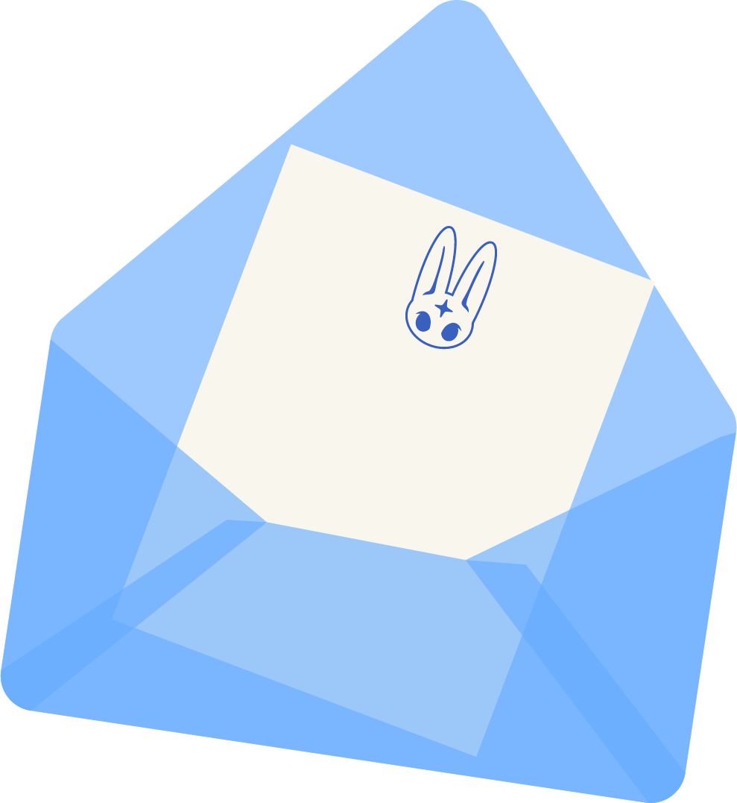
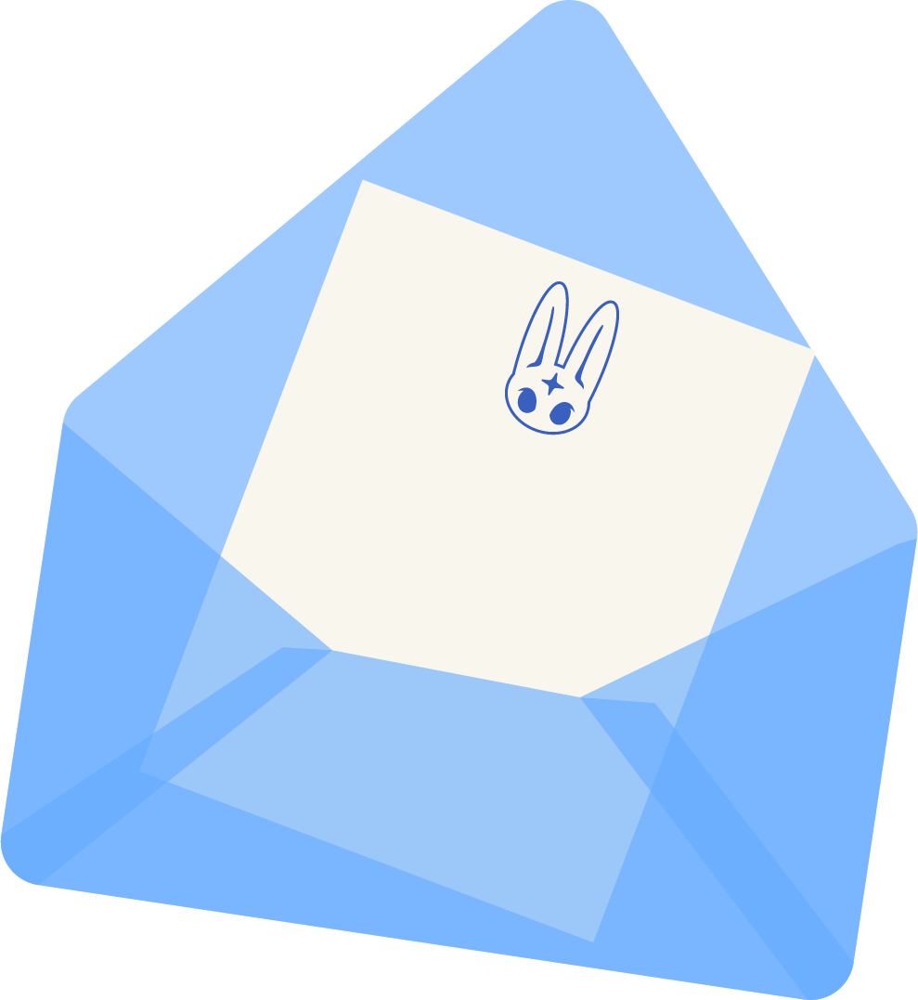

Hipertexto
En la actividad relacioné el concepto de hipertexto con el mod de Warpstone, que se usa en Minecraft para teletransportarse a diferentes lugares del mapa. Un hipertexto funciona de manera similar: al dar clic en un enlace, saltamos a otro punto de información ya existente,
igual que un waystone solo puede llevarnos a lugares a los que antes ya habíamos viajado. En ambos casos, se trata de accesos rápidos que conectan diferentes partes de un mismo “mundo”, ya sea digital o virtual.

UX
Para explicar UX, lo comparé con la Federación del QSMP, que funciona como una especie de gobierno dentro del servidor encargado de que todo esté bajo control y en orden. En términos de experiencia de usuario, la Federación influye directamente en cómo los jugadores perciben
y disfrutan el mundo del QSMP: sus reglas, limitaciones y misiones afectan la forma en que los usuarios interactúan con el entorno. Así como un buen diseño UX busca que la experiencia de una página o aplicación sea clara, accesible y agradable, la Federación moldea la experiencia de juego de los usuarios dentro del servidor.

Prototipado
El concepto de prototipado lo relacioné con una construcción hecha por el streamer Foolish, quien recreó un Titán de Attack on Titan. Primero realizó una versión con bloques de tierra como una especie de borrador o modelo inicial. Una vez que estuvo conforme con la
forma, sustituyó los bloques por materiales decorativos para darle el acabado final. Esto refleja la idea del prototipado: crear una versión preliminar para probar y ajustar antes de llegar al producto final.

La inteligencia artificial (IA) está evolucionando rápidamente y se presenta como una nueva herramienta con un enorme potencial. Sin embargo, precisamente por ser tan reciente, aún carece de límites claros en su uso. Esto plantea una cuestión importante: ¿hasta dónde deberíamos utilizarla?
En muchos casos, la IA es vista como un sustituto o una solución para realizar aquellas tareas en las que no somos expertos o que no queremos hacer. El problema surge cuando se emplea como reemplazo directo de artistas y diseñadores, como si pudiera ofrecer lo mismo que años de práctica,
conocimiento y creatividad humana. Actualmente no existen líneas definidas que establezcan qué está bien y qué no en cuanto a su aplicación. Lo que resulta cuestionable es que se nos impulse a depender de la IA para trabajos que requieren preparación académica, cuando quienes estudiamos
invertimos alrededor de cinco años en formarnos. La IA debe entenderse como una herramienta de apoyo, no como un sustituto. Al final, alguien que prefiere pedirle a una IA que le haga un diseño es la misma persona que no valora ni está dispuesta a pagar por un buen diseño profesional.
 
